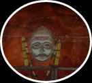

-



Every December,
people in Central India look forward to this yatra , A unique celebration of religion and food, the Bahiram yatra (named for the place) begins on December 5th and ends on February 5th every year.
People gather at the yatra
About 210 Kms from Nagpur, at the heart of India, Bahiram is a temple atop a hill. It has a misshapen orange idol, butter smeared at all times, that represents God Bhairavnath, a fierce manifestation of Shiva, arguably the most important among the trilogy of Hindu Gods. This temple was built in the early 1800s by a farmer called Tulsiram Madhge. It quickly became the gathering place for villagers from all around who designated this temple as their family deity. It also became a social center where villagers gathered to worship, get entertained, shop and also look for alliances for their marriageable sons and daughters. It is no coincidence that Bahiram yatra happens when the main agricultural season is over, produce has been sold and farmers have free time and money in their pockets.
A distinctive feature of Bahiram is that most devotees cook food here, as against bringing packed food from home or eating at restaurants. (These days restaurants have come up too, but they make food as per your specifications). Cooking is carried on exclusively in clay pots sold in the yatra itself for this purpose. All raw material, like vegetables, condiments, and spices are also available in the market. The most popular meal is rodage and bittya (baked hand pounded wheat cake, fried in clarified butter after baking), dal (lentils) and spicy eggplant (aubergine) vegetable curry. Non veg fare is made too, in fact, many city folks come only for cooking mutton and chicken, something they may not be making at home!
Community cooking at the Bahiram Festival There is a small pond behind the temple called Kashi Talao whose water is supposed to impart digestive and aromatic quality to the food cooked in it. This pond fills up with water every monsoon and dries by the festival of Holi in March. For those who want to imbibe as well as feast, there is locally brewed liquor made from Mahua flowers that grow wild in the forests around Bahiram. There are select vendors for it like kalu Mamu, a local Muslim.
How to get there? :-
Driving by road is the main option. With the nearest airports being Nagpur and Bhopal, you can disembark here and drive to Bahiram, with the journey taking a maximum of 3-4 hours. Earlier animal sacrifices happened regularly, mostly of goats. The meat consumed as festive feast. This led to a well revered saint of the times, Sant Gadge Maharaj, making it a place where he propagated Rationalism in Religious Practice and banished animal sacrifice about 45 years ago.
Community cooking at the Bahiram Festival:-
There is a small pond behind the temple called Kashi Talao whose water is supposed to impart digestive and aromatic quality to the food cooked in it. This pond fills up with water every monsoon and dries by the festival of Holi in March. For those who want to imbibe as well as feast, there is locally brewed liquor made from Mahua flowers that grow wild in the forests around Bahiram. There are select vendors for it like kalu Mamu, a local Muslim. .